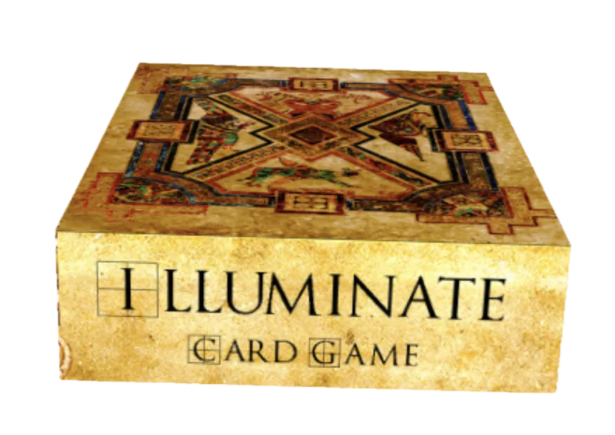

A trick-taking game with a Biblical twist
Illuminate
Bid how many tricks you will win, and play the Grace cards that match your role: Doctor, Neighbor, Preacher or Teacher.
- 2–4 players
- Ages 12+
- 30–60 min
- 52 cards
$19.99
Ships from the SDG Biblical Wisdom shop.

Grace changes the trick
Illuminate is a trick taking game with a Biblical twist.
Players earn points by winning exactly the number of tricks they bid for the hand. The number of cards dealt in a hand increases as the game progresses. The winner is the player with the most points when the pre-specified number of hands have been played.
The Biblical twist to the game is that instead of “trump” cards that are the same for all players, each player takes on a role at the beginning of the game which corresponds with what we see in the gospel accounts (doctor, neighbor, preacher, teacher). Cards that match that role (that have a matching symbol) are “grace” (unmerited favor) cards only for that player. Four special cards in the deck can also disrupt the normal rules of play, making it more challenging for players to make their bid.
Playing already? Open the scorepad to keep score.
The deck
Illuminate is also the name of the deck of cards used to play the game. Tap a picture to enlarge it.
The Illuminate playing deck has 4 suits named for the four Gospels in the Bible. Each suit has 12 cards each of which is identified by a specific passage in that Gospel. The value of each card is based on the chapter and first verse in that passage. A card with a higher chapter has a higher value. If two cards are from the same chapter, then the one with the higher verse has a higher value.
The deck also has four cards that represent four roles that can be taken by the game players: Doctor, Neighbor, Preacher, and Teacher. Each Role Card has a symbol on it: a medical symbol, a heart, a church, and a bell respectively. These symbols also show up on the 48 playing cards in the four suits. This mechanism can be used to represent which cards are “trump” (or “grace”) cards for each player. For example, a card with a heart on it can be used as a trump/grace card for the player with the neighbor Role Card.
Four of the cards in the deck have a star symbol instead of a role symbol. These cards include specific instructions that apply when that card is played.
Here is a summary of the 48 playing cards in the deck:
Artwork on the deck is from the Book of Kells and all Scripture is from the World English Bible, both of which are in the public domain.
Browse all the cards
A closer look at the cards
The deck can be used for playing a wide variety of card games, but (not surprisingly) it is especially well suited to playing the Illuminate game.
How to play
Bid the number of tricks you expect to take in each hand, and score for being exact. The player with the most points after the last hand wins.
Roles and the goal
Illuminate is a trick taking game.
At the beginning of each hand, players bid the number of tricks they expect to take in that hand and score points based on how accurate their bid was.
The player with the most points at the end of the game wins.
Before the game begins, players choose a role they want to take (Doctor, Neighbor, Preacher, or Teacher). They place the corresponding Role Card in front of them to remind themselves and the other players of their role.
The four suits
There are four suits in the game, corresponding to the four Gospels in the Bible (Matthew, Mark, Luke, and John).
There are twelve cards in each suit with each card having a passage from the corresponding Gospel (e.g. Mark 1:11). The value of each card is based on the chapter and verse of the first (or only) verse in the passage on the card.
A card from a higher chapter is worth more than a card from a lower chapter. If two cards are from the same chapter, the card with the higher verse number is worth more than the card with the lower verse number.
For example, Mark 1:31 beats Mark 1:11, but Mark 4:2 beats Mark 1:31.
Grace cards
Each card also has one or two symbols on it that usually correspond to the player roles (as indicated on the Role Cards).
A card that has the symbol associated with a player’s role is a “Grace” card for that player. If he plays that card and he or any other player verbally proclaims “Grace” (which means “unmerited favor”), then his card is worth more than any non-Grace card played.
If two players play Grace cards in the same trick, the Grace card with the higher chapter number (or verse if the same chapter number) is worth the most.
Special Action cards
Four cards in the deck have a star indicating that they are Special Action Cards.
The specific special action is spelled out on the card, with three of these actions only determining who wins the current trick.
The fourth Special Action Card indicates that the roles rotate right. Give your Role Card to the player to your right and take the Role Card from the player to your left.
The new roles take effect immediately and impact which cards are Grace cards for each player in the current and future tricks. During the current trick, Grace cards played after the Special Action Card are determined based on the new roles.
Game play
Players take turns dealing. For the first hand, the dealer deals one card to each player. For the second hand, the dealer deals two cards to each player. Each hand one more card is dealt to each player. In the twelfth (final) hand, twelve cards are dealt to each player.
For each hand, the player to the dealer’s left bids first, followed by the next player to the left, all the way around to the dealer, who bids last. In every hand except those with 6 and 12 cards, each player bids the number of tricks they expect to win in that hand.
In the hands with 6 or 12 cards, players bid either “all” (meaning, they think they can win every single trick) or “nothing” (meaning, they hope to not win any tricks).
In all hands except those with 6 or 12 cards, if you win the exact number of tricks you bid, then you earn points (specifically the number you bid plus 2). If you don’t get your bid then you don’t get any points that hand. (So for example, if you bid 0 and get 0, you earn 2 points; if you bid 1 and get 1, you earn 3 points; if you bid 0 and get 1, you earn 0 points.)
In the hand with 6 cards, if you bid “all” and get all, then you earn 12 points and all other players get 0 points. If you bid “all” and don’t win all the tricks, then you get 0 points. If you bid “nothing” then you earn points equal to 12 minus 2x the number of tricks you actually won. (So, for example, if you bid “nothing” and win 3 tricks, then you earn 6 points.)
In the hand with 12 cards, if you bid “all” and win all the tricks, you earn 24 points and the other players get 0. If you bid “nothing” then you earn 24 – 2x the number of tricks you actually win. (So, for example, if you bid “nothing” and win 3 tricks, then you earn 18 points.)
The player to the dealer’s left leads off playing, choosing one card from their hand to play face-up on the table.
Play continues clockwise, with each player playing one card face up, with the dealer playing last.
Players must follow the suit that was led, if possible. For example, if the first card played is from Matthew, all players must play cards from Matthew if they have any. If a player does not have any cards from Matthew, she can play any card in her hand.
Unless a Grace card or Special Action Card is played, the highest card in the suit that was led wins the trick.
The player winning the trick collects the cards and places them in a small pile in front of her to be counted for scoring at the end of the hand.
If there are still more cards to play in the hand whoever won the trick leads off the next trick by playing a card from her hand.
When a hand is finished, scoring is determined, and dealing passes to the left. We have provided an online scorepad app to simplify keeping score in Illuminate.
After the twelfth hand is played, the scores are added up and the player with the most points wins.
Bidding and scoring
Players bid in order, starting from the player to the left of the dealer.
N = Number of cards dealt
B = Number of tricks bid
W = Number of tricks actually won
Hands with 6 Cards or 12 Cards
| B = # of tricks bid | W = # of tricks actually won | # of points added to score |
|---|---|---|
| B = 0 (nothing) | W | 2xN - 2xW |
| B = N (all) | N | 2xN for this player; 0 for all other players |
| B = N (all) | Not N | 0 |
All Other Hands
| B = # of tricks bid | W = # of tricks actually won | # of points added to score |
|---|---|---|
| B | B | B+2 |
| B | Not B | 0 |
Variations and other games
Change how Illuminate is bid, scored and played, or use the deck for other card games.
Bidding, scoring and playing variations
- Not Perfect bidding: The sum of all player bids can’t match the number of cards in the hand. Since the dealer bids last, this constrains how he can bid. (This can be especially helpful in a 2 person game.)
- Shorter Game: Instead of playing 12 hands, only play 6 hands. You can either play hands of 1,2,3,4,5, and 6 cards, or hands of 2,4,6,8,10, and 12 cards.
- Longer Game: Instead of playing 12 hands, play 23 hands. Play hands of 1,2,3,4,5,6,7,8,9,10,11,12,11,10,9,8,7,6,5,4,3,2, and 1 cards. The special scoring rules apply to both hands of 6 and the hand of 12.
Grace: a game like Spades
- Basically the game of Spades, but played with the Illuminate cards.
- Players agree on how many points it takes to win. Typically this is 225 (a short game) to 450 (a long game) for a 4 person game.
- The object of the game is to be the player with the most points when at least one player gets to the winning score.
- Each player chooses one of the Role Cards at the beginning of the game.
- All cards are dealt each hand.
- Each player bids each hand how many tricks they expect to win. The minimum bid is 1.
- Players must follow suit with the led card if possible.
- The player to the left of the dealer leads first.
- Highest card in the led suit wins unless someone plays a Grace Card (with a symbol matching their Role Card).
- If one or more Grace Cards are played, the highest Grace Card played wins the hand.
- For this game, disregard the instructions on the Special Cards.
- The player that wins a trick, leads the next trick.
- Scoring is determined at the end of the hand.
- If a player won fewer tricks than they bid, they get zero points.
- If the player gets at least as many tricks as they bid, they get 10x their bid.
- If they got more tricks than they bid, they also get 1 point for each trick they won over what they bid.
- The player to the left of that hand’s dealer deals the next hand.
- The winner is the player with the most points when the first player gets to the winning number of points.
Mercy: a game like Hearts
- Similar to the game of Hearts, but played with the Illuminate cards.
- Players agree on the number of points that marks the end of the game. Typically this is 75 (a short game) to 150 (a longer game) for a 4 person game.
- The object of the game is to be the player with the fewest points when any player gets to the game ending score.
- Each player chooses one of the Role Cards at the beginning of the game.
- All cards are dealt each hand.
- Players must follow suit with the led card if possible.
- The player to the left of the dealer leads first.
- Highest card in the led suit wins unless someone plays a Grace Card (with a symbol matching their Role Card).
- If one or more Grace Cards are played, the highest Grace Card played wins the hand.
- For this game, disregard the instructions on the Special Cards.
- The player that wins a trick, leads the next trick.
- Scoring is determined at the end of each hand.
- Players get one point for each of their Grace Cards they won (whether they played it or someone else played it).
- Players get 7 points for each Special Card that they won.
- The player to the left of that hand’s dealer deals the next hand.
- The winner is the player with the fewest points when the first player gets to the losing number of points.
Get Illuminate
$19.99 · If inventory is available, orders from the SDG Biblical Wisdom shop typically ship within a couple of days.
Otherwise you can order from The Game Crafter print-on-demand store.
Order from The Game Crafter